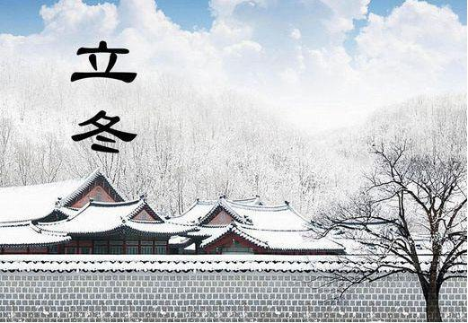

人闲桂花落，夜静春山空，月明惊山鸟，时鸣春涧中。
危楼高百尺，手可摘星辰，不敢高声语，恐惊天上人。
立冬是农历二十四节气之一， 也是中国传统节日之一；时间点在公历每年11月7-8日之间，即太阳位于黄经225°。此时，地球位于赤纬-16°19'， 北京地区正午太阳高度仅有33°47'。立冬过后，日照时间将继续缩短，正午太阳高度继续降低。中国民间以立冬为冬季之始， 立冬期间，有需进补以度严冬的食俗。
Download Firefox
Click hereto Download Firefox